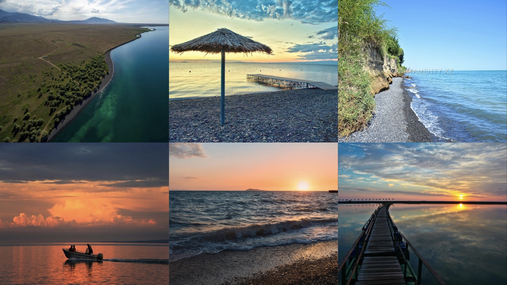

Alakol is a salty drainless lake located in a semi–desert zone between the snowy peaks of the Dzungarian Alatau and the blue ridges of Tarbagatai, in the northeast of the Almaty region at an altitude of 347 m above sea level. Its area is 2700 sq. m., the depth reaches 50 m., has a length of 102 km, a width of 54 km. The water is salty, very warm. The temperature on the water surface reaches 24-26 degrees. According to long-term observations, the water temperature on Alakol is the same for most of June as on Issyk-Kul in July! The bathing season lasts from June to mid-September. By chemical composition, the water of Lake Alakol includes almost the entire periodic table, which contributes to the treatment of many diseases.
